AI-generated historical scene unavailable Chang'an at dawn
HIST 270 · Chapter 5 · Lecture 3
Chang'an and the Tang Elite
An open capital, a gated society
City portrait · Cosmopolitan contact · Family power
AI interpretation · Tang Chang'an at dawn
A traveler at the gate · early Tang Chang'an
A visitor entered the greatest planned city on earth, and every street still watched him.
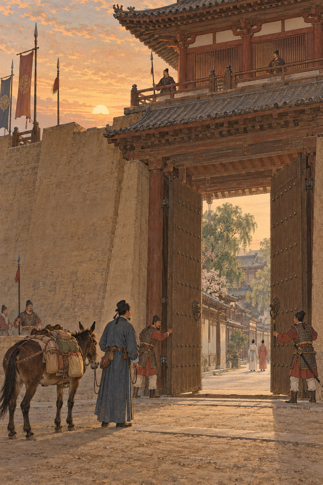
AI-generated historical scene unavailable Traveler at a Chang'an gate
AI-generated historical interpretation in the Tang tomb-mural style. Clothing, architecture, and equipment are meant to evoke Tang Chang'an; this is not a surviving historical image.
Scale: roughly a million people in the metropolitan area; about 84 square kilometers inside the outer walls.
Plan: a north-facing palace axis, broad avenues, and about 108 walled residential wards.
Watch: gates, curfew drums, market officials, and ward walls regulated who moved when.
Openness meant contact under supervision, not a free-for-all street life.
Sources: Cambridge History of China, vol. 3; Victor Cunrui Xiong, Sui-Tang Chang'an; Heng Chye Kiang on East Asian capital planning.
The journey ahead
Walk the plan, meet the people, then ask who still held the keys.
1 · PlanGates and wardsHow the capital controlled movement
2 · ContactMarkets and faithsWho came, traded, worshipped, and adapted
3 · EliteFamily and examsHow prestige survived new recruitment rules
Thesis: Tang Chang'an was an open cosmopolitan capital, and openness still ran through gates, ranks, and family power.
Sources: Xiong, Sui-Tang Chang'an; Shao-yun Yang, Early Tang China and the World; Nicolas Tackett on Tang-Song elite change.
The northern axis · palace and avenue
The plan put imperial authority at the north and made the city face it.
Inheritance: the Tang kept the Sui Daxing plan and renamed the city Chang'an.
Axis: palace complexes sat at the north; the great avenue ran south through the grid.
Meaning: approaching the center meant approaching rank, not just location.
Geometry was politics: the capital taught hierarchy before any official spoke.
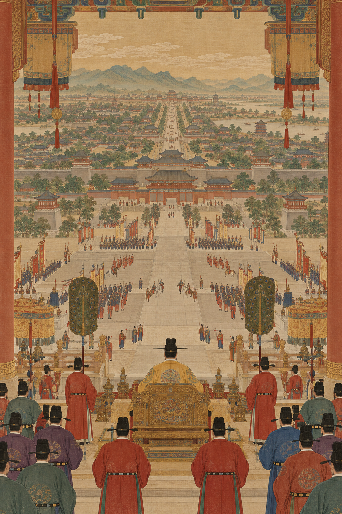
AI-generated historical scene unavailable Northern palace axis
AI-generated historical interpretation in the Tang tomb-mural style. Clothing, architecture, and equipment are meant to evoke Tang Chang'an; this is not a surviving historical image.
Sources: Xiong, Sui-Tang Chang'an; Heng Chye Kiang; Cambridge History of China, vol. 3.
Wards and curfew · night drums
Ward walls and curfew drums turned movement into a privilege with hours.
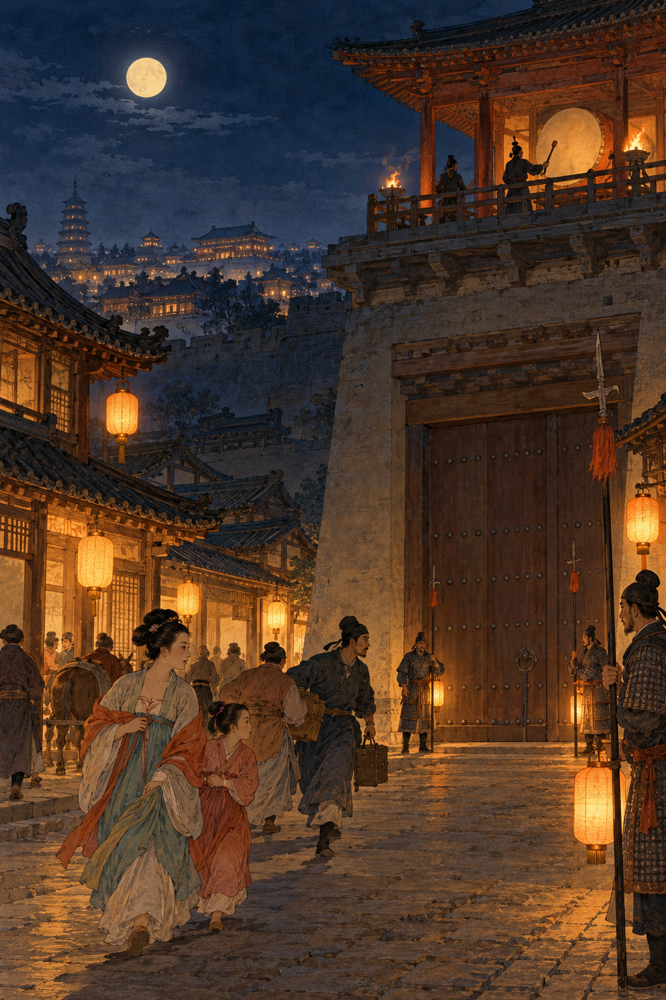
AI-generated historical scene unavailable Ward gates at curfew
AI-generated historical interpretation in the Tang tomb-mural style. Clothing, architecture, and equipment are meant to evoke Tang Chang'an; this is not a surviving historical image.
Wards: about 108 walled residential compounds; each had gates that could close.
Curfew: drums signaled when streets emptied; night travel needed permission.
Exception: high status, official business, or special leave could open a door others lacked.
The same city that hosted foreign temples also locked ordinary nights down.
Sources: Xiong, Sui-Tang Chang'an; Twitchett on Tang government; primary references in Tang statutes on night travel.
East and West Markets · supervised exchange
The great markets concentrated trade under official eyes.
Two poles: East Market and West Market anchored commerce inside the grid.
Officials: market directors set hours, watched prices, and policed fraud and banned goods.
West Market: especially linked in sources and later memory to foreign merchants and exotic goods.
A supervised market is still a market. Regulation does not cancel exchange; it channels it.
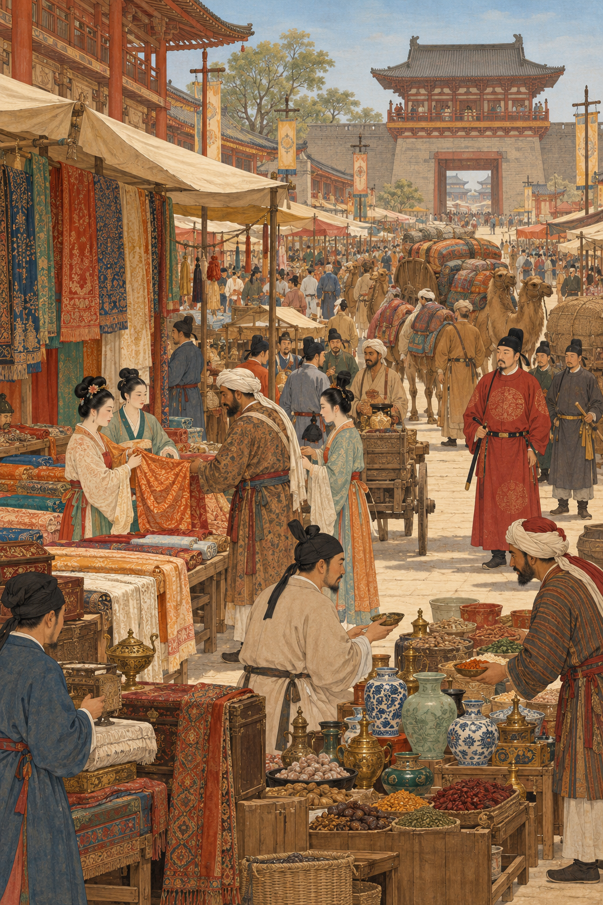
AI-generated historical scene unavailable West Market under official eyes
AI-generated historical interpretation in the Tang tomb-mural style. Clothing, architecture, and equipment are meant to evoke Tang Chang'an; this is not a surviving historical image.
Sources: Xiong, Sui-Tang Chang'an; Schafer, The Golden Peaches of Samarkand; Cambridge History of China, vol. 3.
A dual-capital system · Chang'an and Luoyang
Luoyang gave the Tang a second political and logistical heart farther east.
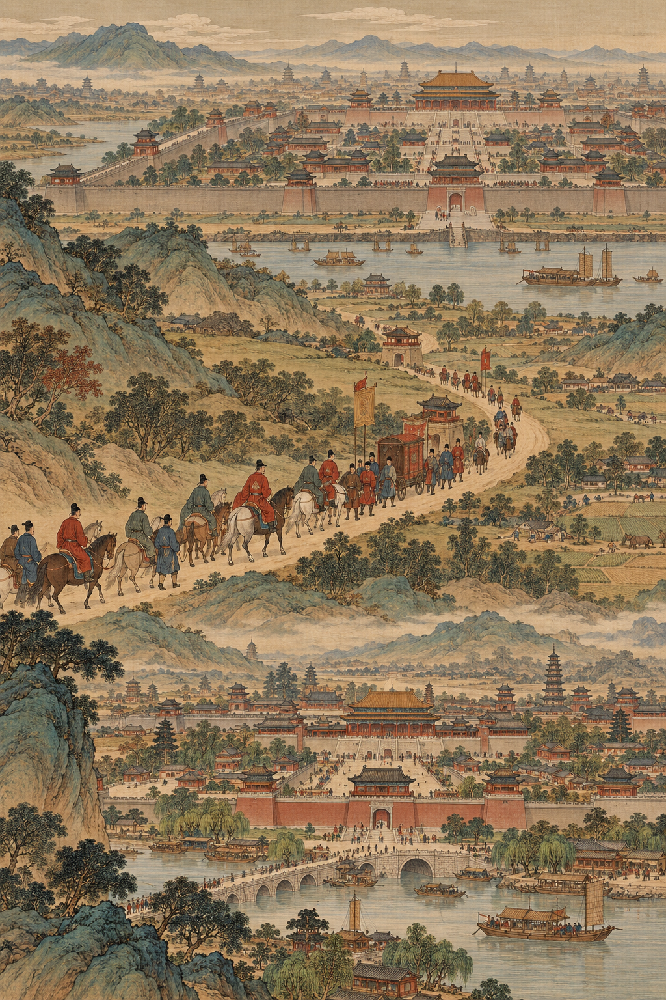
AI-generated historical scene unavailable Luoyang as eastern capital
AI-generated historical interpretation in the Tang tomb-mural style. Clothing, architecture, and equipment are meant to evoke Tang Chang'an; this is not a surviving historical image.
Chang'an: western capital, military-political base toward the northwest.
Luoyang: eastern capital, closer to the grain-rich North China Plain and canal routes.
Practice: courts moved, stored grain, and staged campaigns using both cities.
One empire, two capitals: redundancy was strategy, not indecision.
Sources: Xiong; Twitchett; Cambridge History of China, vol. 3.
Check yourself · on your own
How did the plan of Chang'an control movement?
Answer from memory, in a sentence or two each:
Where did the palace sit in the plan, and what did that placement teach about rank?
Which statement best captures wards and curfew?
Wards were open neighborhoods; only the palace had walls.
Ward gates and night drums limited ordinary movement, while status and office could soften the rules.
Foreign merchants were exempt from all city regulations.
Curfew applied only during wartime emergencies.
How were the East and West Markets both open for trade and closed under official power?
When you have written your answers, compare them with these possible answers.
×
Possible answers
The palace complexes sat at the north end of a planned grid. Approaching them meant approaching concentrated imperial authority, so space itself ranked people.
B. Wards were walled compounds with gates; drums marked curfew. Elite status and official business could create exceptions. A invents open neighborhoods; C erases regulation of foreigners; D wrongly limits curfew to wartime.
They concentrated exchange and foreign goods, yet market officials set hours, watched prices, and enforced rules. Bustle happened inside a supervised institution.
Study tip: when a sentence uses "only," "all," or "exempt," ask whether everyday Tang administration was that absolute.
Sogdian merchants · diaspora in the capital
Sogdian networks carried goods, skills, and community life into Tang cities.
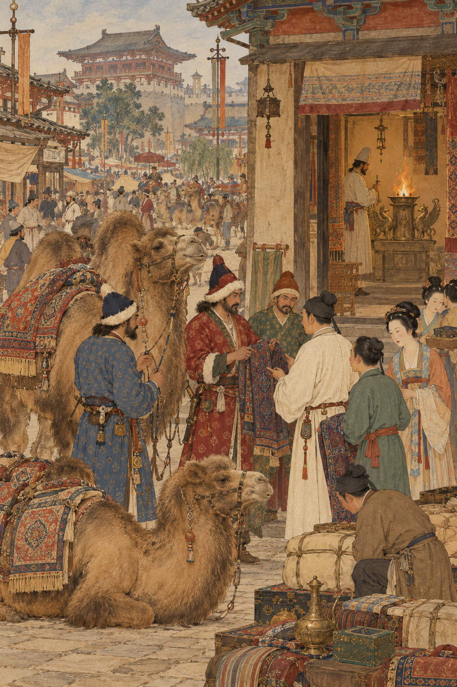
AI-generated historical scene unavailable Sogdian merchants in Chang'an
AI-generated historical interpretation in the Tang tomb-mural style. Clothing, architecture, and equipment are meant to evoke Tang Chang'an; this is not a surviving historical image.
Homeland: oasis cities of Sogdiana (around modern Uzbekistan and Tajikistan).
Roles: long-distance trade, translation, music, and sometimes office or military service.
Community: temples, burial practices, and family networks marked a diaspora, not just visiting peddlers.
Diaspora means rooted presence abroad, not a one-night caravan stop.
Sources: Valerie Hansen; Étienne de la Vaissière on Sogdians; Schafer, Golden Peaches.
Aluoben and the Church of the East · 635
Court recognition of a foreign faith signaled presence, not mass conversion.
635: the Christian missionary Aluoben reached Chang'an; Taizong's court allowed a monastery and translation work.
Also present: Zoroastrian and Manichaean communities appear in Tang records and later memorials.
Limit: temples and envoys do not prove that most Tang subjects changed religion.
Presence is a historical fact. Majority conversion is a different claim that needs different evidence.
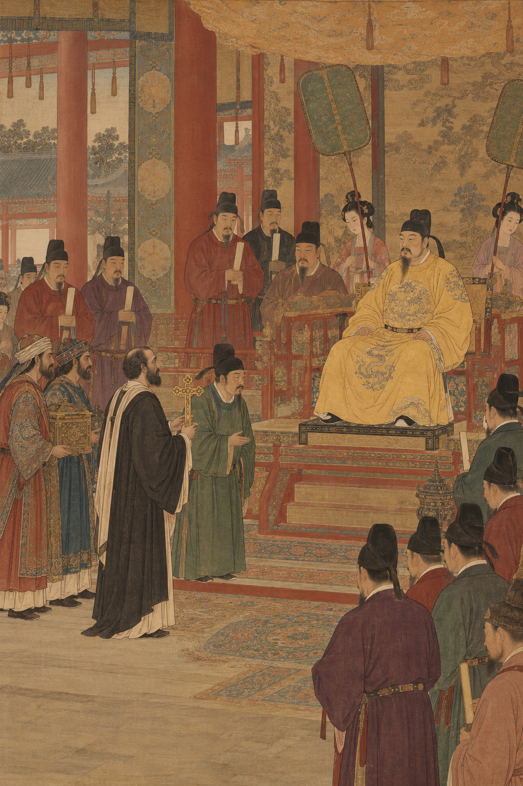
AI-generated historical scene unavailable Aluoben at the Tang court
AI-generated historical interpretation in the Tang tomb-mural style. Clothing, architecture, and equipment are meant to evoke Tang Chang'an; this is not a surviving historical image.
Sources: Xi'an Stele text; Cambridge History of China, vol. 3; Yang, Early Tang China and the World.
Polo, dress, and music · elite remaking
Tang elites adopted foreign styles and remade them as markers of their own prestige.
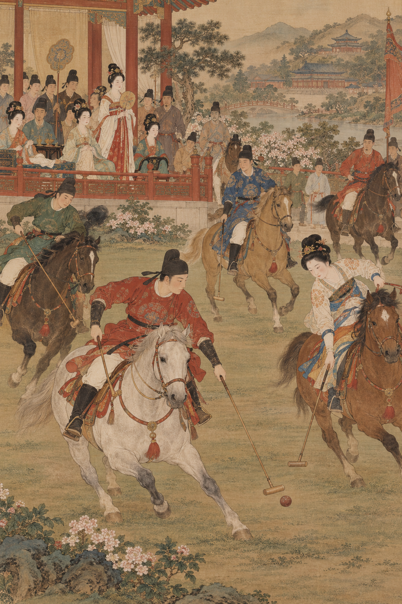
AI-generated historical scene unavailable Polo and foreign-influenced fashion
AI-generated historical interpretation in the Tang tomb-mural style. Clothing, architecture, and equipment are meant to evoke Tang Chang'an; this is not a surviving historical image.
Sport: polo, linked to Iranian and Central Asian equestrian culture, became a Tang elite passion.
Fashion and music: "western" dress, instruments, and dances entered court and urban entertainment.
Remaking: borrowing did not erase hierarchy; it gave elites new ways to display taste and power.
Cultural openness can widen the elite toolkit without leveling the elite.
Sources: Schafer; tomb murals of Tang princes; Hansen on Silk Road exchange.
Primary source · the Xi'an Stele · 781
The Xi'an Stele told a Christian community's story in the language of Tang legitimacy.
What it is: a large stone inscription erected in 781 by the Church of the East in China.
What it claims: Aluoben's arrival, imperial favor, monastery foundations, and a continuous community.
How to read it: invaluable evidence, and also a persuasive monument written to praise patrons and faith.
A community stele proves a community with connections. It does not census the empire.
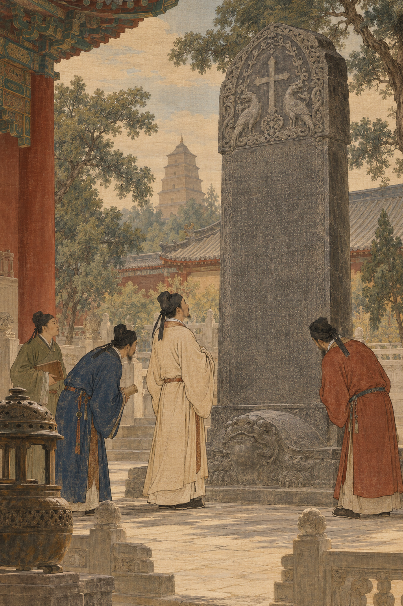
AI-generated historical scene unavailable Xi'an Stele
AI-generated historical interpretation in the Tang tomb-mural style. Clothing, architecture, and equipment are meant to evoke Tang Chang'an; this is not a surviving historical image.
Sources: Xi'an Stele (781); translations and discussions in modern Silk Road sourcebooks; Cambridge History of China, vol. 3.
Check yourself · on your own
What did Tang cosmopolitanism include, and what did it not erase?
Answer from memory:
Give one concrete example of people, one of religion, and one of elite style that show cross-cultural contact in Chang'an.
Which definition of Tang cosmopolitanism fits the evidence best?
Foreign cultures replaced Chinese traditions at every level of society.
Only luxury goods moved; people and religions stayed outside the walls.
Contact and selective adoption flourished, while political and social hierarchy continued to gate access and prestige.
Imperial favor for one monastery proves that most subjects converted.
Why is the Xi'an Stele strong evidence of presence and weak evidence of mass conversion?
When ready, compare with possible answers.
×
Possible answers
People: Sogdian merchant communities. Religion: Aluoben and the Church of the East (with Zoroastrian/Manichaean presence as further examples). Style: polo, "western" music or dress remade by Tang elites.
C. Cosmopolitanism here means intensive contact plus local selection under hierarchy. A exaggerates replacement; B denies documented communities; D confuses favor with conversion rates.
It records people, dates, imperial patronage, and a community's self-presentation. It cannot show what share of the empire's population practiced the faith.
After the Nine Ranks · old family prestige
Ending the Nine Ranks ended a ranking office, not the social power of great families.
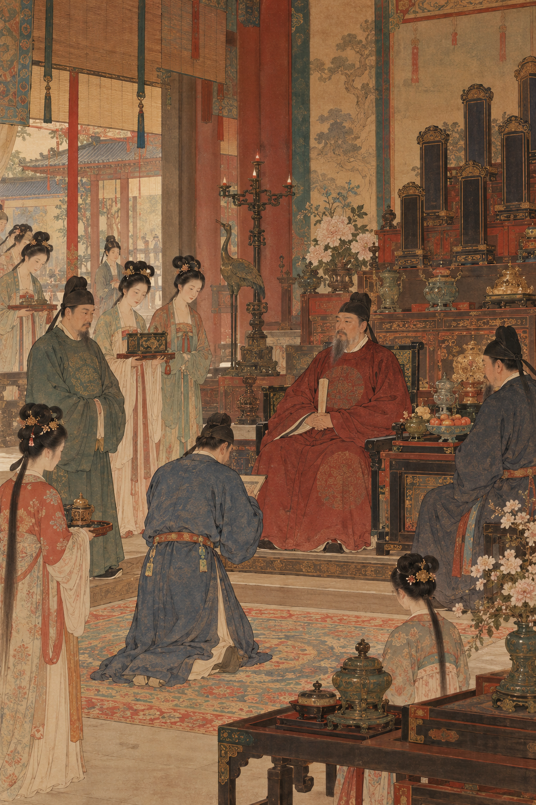
AI-generated historical scene unavailable Old family hall and genealogy
AI-generated historical interpretation in the Tang tomb-mural style. Clothing, architecture, and equipment are meant to evoke Tang Chang'an; this is not a surviving historical image.
Nine Ranks: an earlier system that graded candidates for office through local evaluators; the Sui abolished it as a formal path.
What remained: marriage networks, reputations, education, capital residence, and wealth.
Result: aristocrats still recognized one another even when the paperwork changed.
Institutional reform can move the doorway without emptying the house.
Sources: Cambridge History of China, vol. 3; Tackett; Chen et al. on examinations and inequality.
Taizong's clan register · 632-638
Taizong tried to make service to the Tang outrank older pedigree fame.
Commission: in the 630s Taizong ordered a re-ranking of eminent clans.
Political aim: elevate families loyal and useful to the Tang above houses famous only for antiquity.
Pushback: old prestige did not vanish because an official list shuffled names.
The court could rewrite a register. It could not instantly rewrite marriage markets.
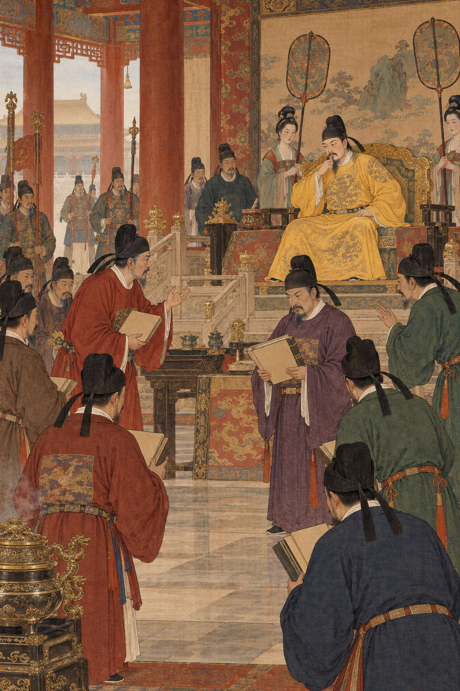
AI-generated historical scene unavailable Taizong and the clan register
AI-generated historical interpretation in the Tang tomb-mural style. Clothing, architecture, and equipment are meant to evoke Tang Chang'an; this is not a surviving historical image.
Sources: Wechsler; Twitchett; Cambridge History of China, vol. 3.
Two doors into office · exam candidate and yin son
One young man sat for exams; another entered through his father's privilege.
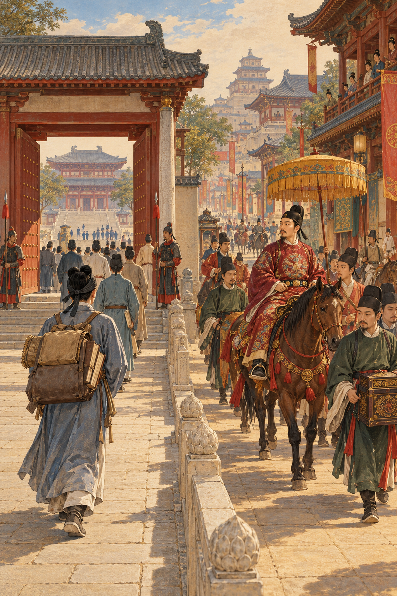
AI-generated historical scene unavailable Exam candidate versus yin privilege
AI-generated historical interpretation in the Tang tomb-mural style. Clothing, architecture, and equipment are meant to evoke Tang Chang'an; this is not a surviving historical image.
Exams: routes such as mingjing and jinshi rewarded classical learning and composition for a small candidate pool.
Yin privilege: sons of officials could receive guarded access to office through hereditary shadow privilege.
Both real: Tang recruitment was plural; exams never stood alone.
"The Tang used examinations" is true. "The Tang used only examinations" is false.
Sources: Twitchett; Chen et al., Political Economy of China's Imperial Examination System; lecture 2 Pierian note on early Tang exams.
Across the Tang · exams expand, resources still matter
Examinations grew more important over time, while family resources still shaped who could compete.
Trend: across the Tang centuries, exam success weighed more heavily in elite careers.
Caveat: preparation required books, tutors, time, and often capital residence.
Scholarship: quantitative work on epitaphs shows mobility was real and still unequal.
A wider doorway is not the same thing as an equal race.
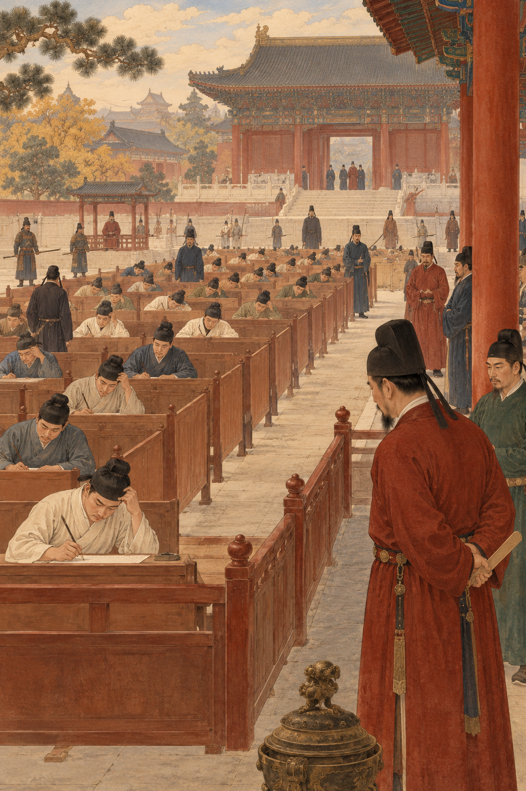
AI-generated historical scene unavailable Examination compound
AI-generated historical interpretation in the Tang tomb-mural style. Clothing, architecture, and equipment are meant to evoke Tang Chang'an; this is not a surviving historical image.
Sources: Tackett; Chen et al. (2025); Cambridge History of China, vols. 3 and 5.
Marriage, money, and reputation
Elite families converted wealth and marriage into durable reputation.
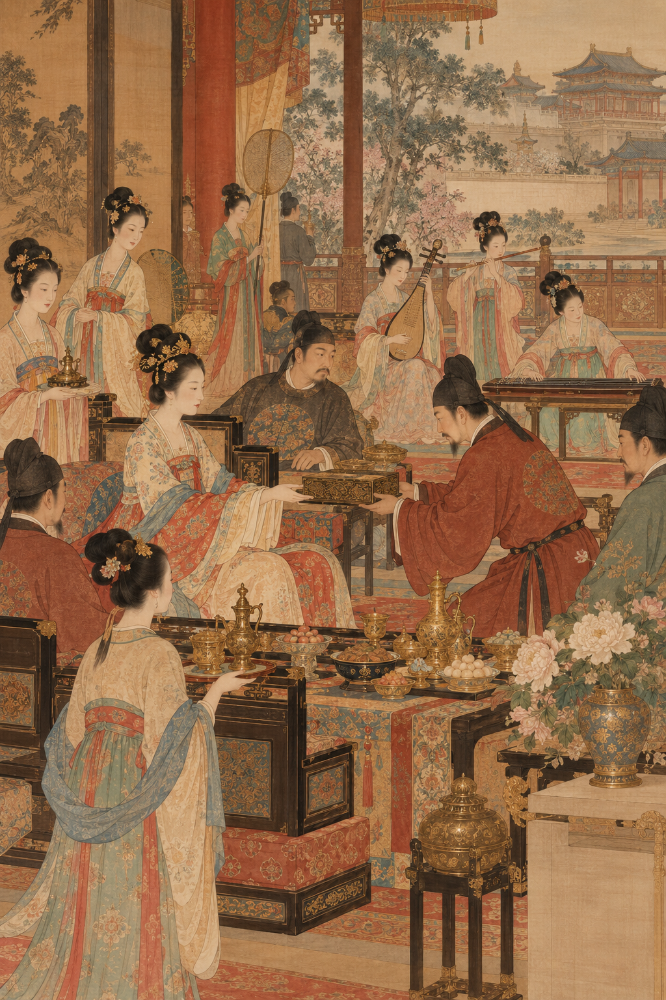
AI-generated historical scene unavailable Elite marriage banquet
AI-generated historical interpretation in the Tang tomb-mural style. Clothing, architecture, and equipment are meant to evoke Tang Chang'an; this is not a surviving historical image.
Marriage: alliances joined pedigrees, offices, and provincial ties.
Wealth: land, gifts, and urban property funded education and display.
Reputation: genealogies, poetry, patronage, and ritual made advantage look like merit and taste.
Office was one prize. Social recognition was another, and families chased both.
Sources: Tackett; Hansen; Twitchett on Tang society.
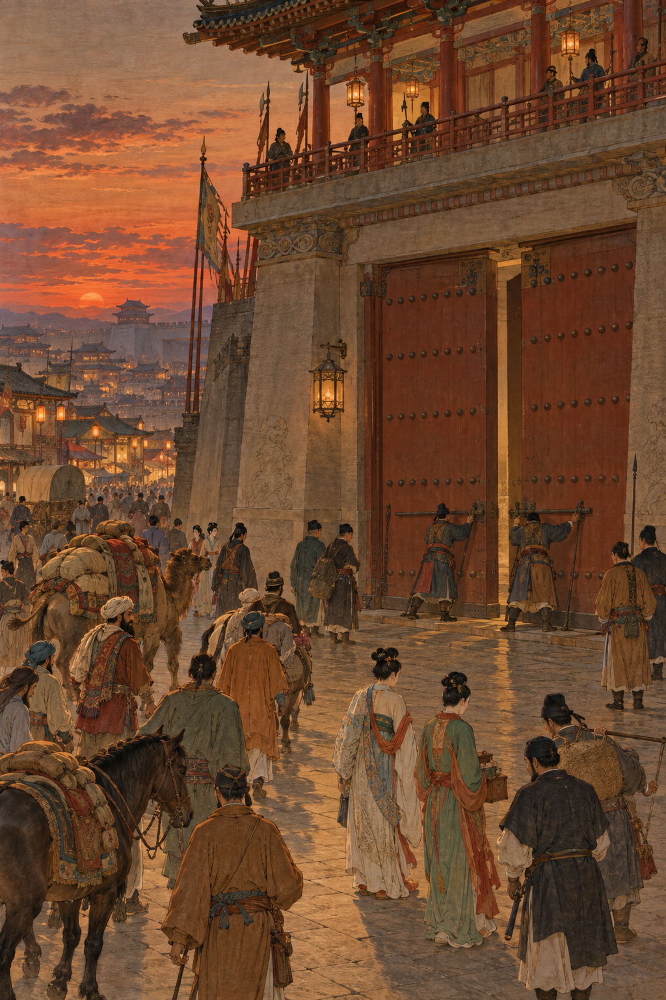
AI-generated historical scene unavailable Closing gate at dusk
Bookend · the same gate, evening
At dusk the cosmopolitan city closed its doors.
Foreign goods, sacred books, and ambitious sons were already inside. So were the rules that ranked them.
AI interpretation · gate closing at curfew
Short takeaway
Chang'an gathered an open world inside a gated society.
Plan
Palace axis, wards, curfew, and supervised markets structured contact.
Contact
Sogdians, foreign faiths, and remade styles made the capital cosmopolitan.
Elite
After Nine Ranks, exams grew, yet family resources and yin routes still mattered.
Carry forward: openness and inequality were partners in the same capital, not opposites on a seesaw.
In-class writing · Review Question 3 · assessed
Explain the tension at the heart of Tang Chang'an.
How did foreign interactions and long-distance routes shape Chang'an's cultural and religious landscape, and why did that openness not eliminate elite hierarchy?
Write 5-7 sentences. Use one feature of the city, two examples of cultural or religious contact, and one mechanism of elite advantage. End with a judgment: was the court mainly an organizer, a gatekeeper, or both?
Adapted from Review Question 3 in the course textbook, ch. 5. Keep this slide in the required lecture path.
Beyond the lecture
Pierian Spring
Optional Independent Study
Five slides for dual-capital depth, Silk Road networks, religious caveats, scholarship on exams and families, and further lives in the sources.
"A little learning is a dang'rous thing; / Drink deep, or taste not the Pierian spring." · Alexander Pope, An Essay on Criticism (1711)
Independent study · dual-capital depth
Chang'an and Luoyang divided risk, grain, and political theater.
AI-generated historical scene unavailable Dual capitals logistics
AI-generated historical interpretation in the Tang tomb-mural style. Clothing, architecture, and equipment are meant to evoke Tang Chang'an; this is not a surviving historical image.
Military west: Chang'an faced Türk, Tibetan, and Inner Asian frontiers.
Logistical east: Luoyang sat nearer surplus grain and canal corridors.
Mobility: emperors, courts, and emergency governments could shift weight between them.
Dual capitals were an insurance policy for a continental empire.
Sources: Xiong; Twitchett; Graff, Medieval Chinese Warfare.
Independent study · Silk Road as network
The "Silk Road" was a web of routes, seasons, and middlemen, not one highway.
Land corridors: oasis chains across Central Asia linked China to Iran and beyond.
Maritime routes: southern ports tied Tang markets to Southeast Asia and the Indian Ocean.
Modern phrase: "Silk Road" is convenient and misleading if you picture a single paved road.
Network thinking prevents cartoon history.
AI-generated historical scene unavailable Overland caravan
AI-generated historical interpretation in the Tang tomb-mural style. Clothing, architecture, and equipment are meant to evoke Tang Chang'an; this is not a surviving historical image.
Sources: Tackett; Chen et al. (2025); Bol on intellectual and social transitions into the Song.
Independent study · extra lives
Follow one merchant, one monk, and one marriage if you want the city to become people again.
Merchant
Trace a Sogdian family across markets, temples, and burial evidence.
Monk / missionary
Read the Xi'an Stele as biography and publicity for a religious network.
Marriage
Use elite epitaphs to see how unions stored office and reputation.
AI-generated historical scene unavailable Maritime exchange
AI-generated historical interpretation in the Tang tomb-mural style. Clothing, architecture, and equipment are meant to evoke Tang Chang'an; this is not a surviving historical image.
Sources: Hansen; de la Vaissière; Tackett; Schafer.
×
Ward (fang)
In Sui-Tang Chang'an, a ward was a walled residential compound with gates that officials could open or close. Wards held homes, temples, and local life. They were not open modern city blocks. About 108 wards appear in the standard reconstruction of the planned capital.